Sustainable Fishing and Aquaculture
Introduction
Sustainable fishing and aquaculture are essential for maintaining healthy marine ecosystems while meeting the global demand for seafood. Sustainable fishing involves responsible practices that prevent overfishing, protect marine habitats, and minimize bycatch by using selective gear and enforcing catch limits. On the other hand, sustainable aquaculture focuses on farming fish and other seafood in environmentally friendly ways, such as reducing water pollution, using sustainable feed, and preventing habitat destruction. By balancing conservation with economic needs, these practices help protect biodiversity, support coastal communities, and ensure a stable seafood supply for future generations.
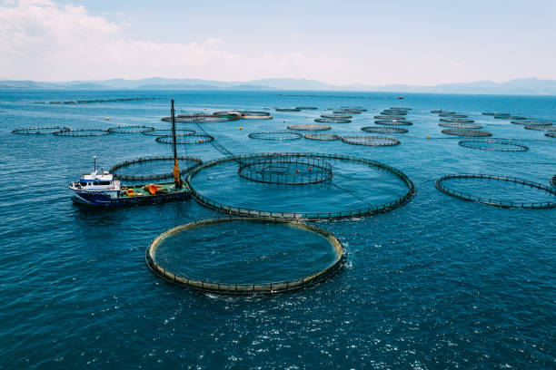
Causes of Sustainable Fishing and Aquaculture
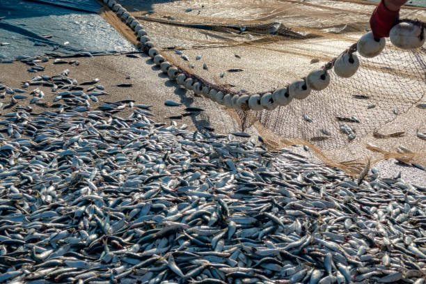
1. Overfishing and Depleting Fish Stocks
Overfishing and depleting fish stocks occur when fish are caught at a faster rate than they can reproduce, leading to a decline in population levels. This threatens marine biodiversity, disrupts ecosystems, and reduces the availability of seafood for future generations. Overfishing is often driven by high consumer demand, illegal fishing, and inefficient regulations. As fish stocks decline, it also negatively impacts fishing communities that rely on seafood for their livelihoods. To combat this issue, sustainable fishing practices such as catch limits, seasonal restrictions, and marine protected areas are essential for restoring and maintaining healthy fish populations.
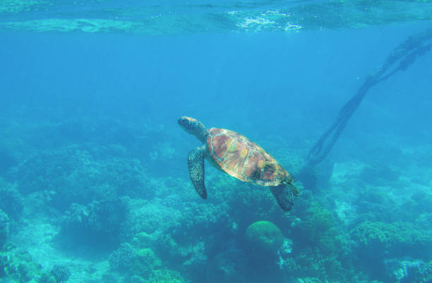
2. Marine Ecosystem Protection
Marine ecosystem protection is crucial for preserving the health and balance of ocean environments, which support diverse marine life and provide essential resources for humans. Pollution, habitat destruction, climate change, and overfishing threaten these ecosystems, leading to biodiversity loss and environmental degradation. Protecting marine ecosystems involves measures such as establishing marine protected areas, reducing pollution, promoting sustainable fishing, and restoring damaged habitats like coral reefs and mangroves. By safeguarding these ecosystems, we ensure the long-term health of marine life, maintain food security, and support the livelihoods of coastal communities.
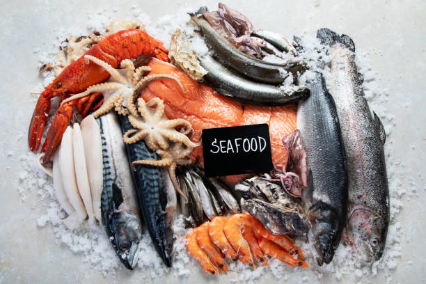
3. Rising Global Seafood Demand
The rising global seafood demand is driven by population growth, changing dietary preferences, and the increasing recognition of seafood as a healthy protein source. As more people consume fish and other seafood, pressure on wild fish stocks intensifies, leading to overfishing and ecosystem degradation. To meet this growing demand while preserving marine biodiversity, sustainable fishing and responsible aquaculture practices are essential. Innovations in fish farming, improved fishing regulations, and consumer awareness about sustainable seafood choices play a vital role in balancing seafood supply with environmental conservation.
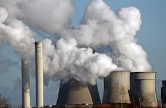
4. Climate Change and Pollution
Climate change and pollution pose significant threats to marine ecosystems, affecting fish populations, coral reefs, and overall ocean health. Rising sea temperatures, ocean acidification, and changing weather patterns disrupt marine habitats and fish migration. Additionally, pollution from plastic waste, oil spills, and agricultural runoff leads to habitat destruction and harmful algal blooms. These environmental changes threaten biodiversity and the livelihoods of coastal communities. To mitigate these impacts, sustainable fishing, reducing carbon emissions, and implementing stricter pollution controls are essential for preserving marine life and ensuring the long-term health of ocean ecosystems.
Threats of Sustainable Fishing and Aquaculture
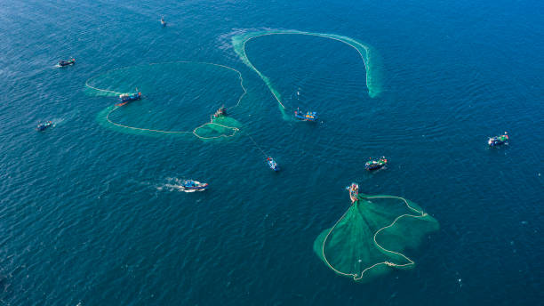
Despite the benefits of sustainable fishing and aquaculture, several threats challenge their effectiveness. Overfishing, pollution, and the impacts of climate change disrupt marine ecosystems and fish populations, while diseases and parasites can affect both wild and farmed species. Habitat destruction and invasive species also threaten the balance of marine environments. Additionally, the reliance on fishmeal in aquaculture feed can contribute to overfishing. These challenges highlight the need for continuous innovation, stronger regulations, and global collaboration to ensure that sustainable practices can successfully protect marine biodiversity and support food security.
Types of Aquaculture
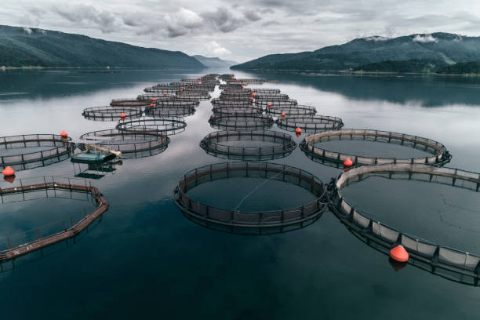
1.Marine Aquaculture
Marine aquaculture, also known as mariculture, involves the farming of fish, shellfish, and seaweed in ocean waters, coastal areas, or man-made enclosures. It plays a crucial role in meeting the rising global seafood demand while reducing pressure on wild fish stocks. Commonly farmed species include salmon, tuna, shrimp, oysters, and mussels. Sustainable marine aquaculture practices focus on minimizing environmental impacts by using eco-friendly feeds, reducing waste, and preventing habitat destruction. When managed responsibly, marine aquaculture helps support food security, economic growth, and marine ecosystem conservation.
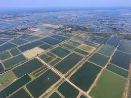
2. Freshwater Aquaculture
Freshwater aquaculture involves the cultivation of fish and other aquatic species in freshwater environments such as lakes, ponds, rivers, and artificial tanks. It is a significant contributor to global seafood production, providing a sustainable alternative to wild-caught fish. Commonly farmed species include tilapia, catfish, carp, and trout. Sustainable freshwater aquaculture practices focus on efficient water use, responsible feed management, and disease prevention to minimize environmental impact. By promoting eco-friendly farming methods, freshwater aquaculture helps ensure food security, supports rural economies, and reduces pressure on natural fish populations.
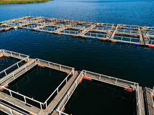
3. Brackish Water Aquaculture
Brackish water aquaculture involves the farming of fish and shellfish in environments where freshwater and seawater mix, such as estuaries, mangroves, and coastal lagoons. This type of aquaculture is ideal for species that thrive in slightly salty water, including shrimp, milkfish, mud crabs, and seabass. Brackish water farming plays a vital role in seafood production, especially in tropical and coastal regions. Sustainable practices focus on maintaining water quality, preventing habitat destruction, and using eco-friendly feed to reduce environmental impact. Proper management of brackish water aquaculture helps support food security, local livelihoods, and marine ecosystem conservation.
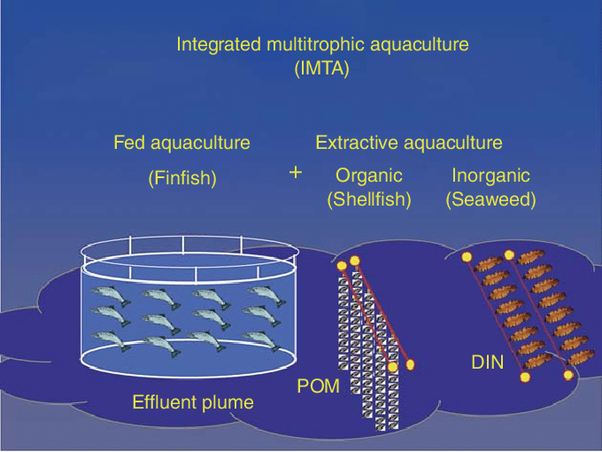
4. Integrated Multi-Trophic Aquaculture (IMTA)
Integrated Multi-Trophic Aquaculture (IMTA) is a sustainable aquaculture system that cultivates different species together in a way that mimics natural ecosystems. In IMTA, fish, shellfish, and seaweed are farmed in the same environment, allowing one species' waste to serve as nutrients for another. For example, fish produce organic waste that can be absorbed by shellfish and seaweed, reducing pollution and improving water quality. This approach enhances resource efficiency, minimizes environmental impact, and promotes biodiversity. IMTA helps create a more balanced and eco-friendly seafood production system while supporting economic and environmental sustainability.
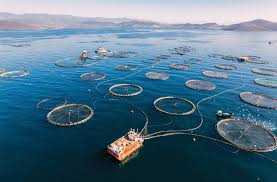
5. Offshore Aquaculture
Offshore aquaculture involves farming fish and other marine species in deep ocean waters, away from the coast. This method reduces environmental impact by allowing better water circulation, which helps prevent pollution buildup and disease outbreaks. Commonly farmed species in offshore aquaculture include salmon, tuna, and cobia. Sustainable offshore farming utilizes advanced technologies such as submersible cages and automated feeding systems to enhance efficiency and minimize ecological disruption. By reducing pressure on coastal ecosystems and wild fish populations, offshore aquaculture offers a promising solution for meeting global seafood demand while maintaining marine environmental health.